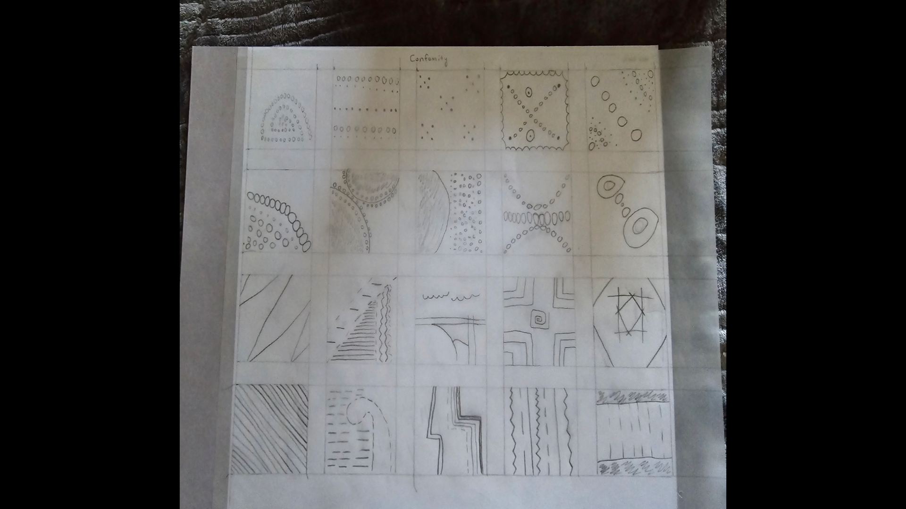
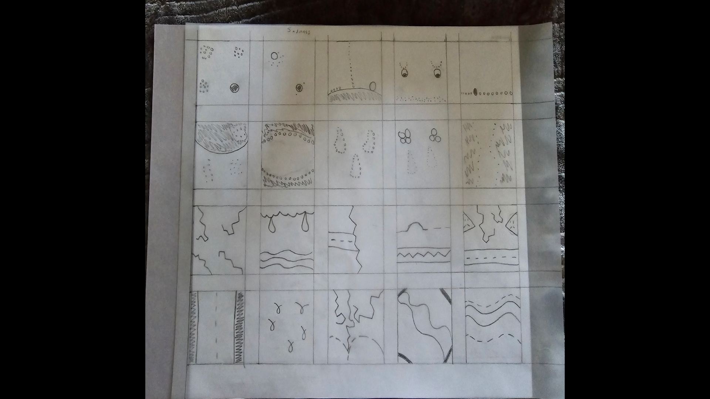
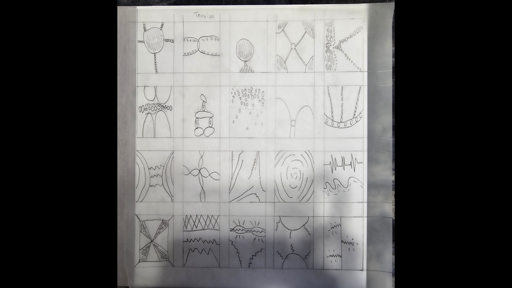
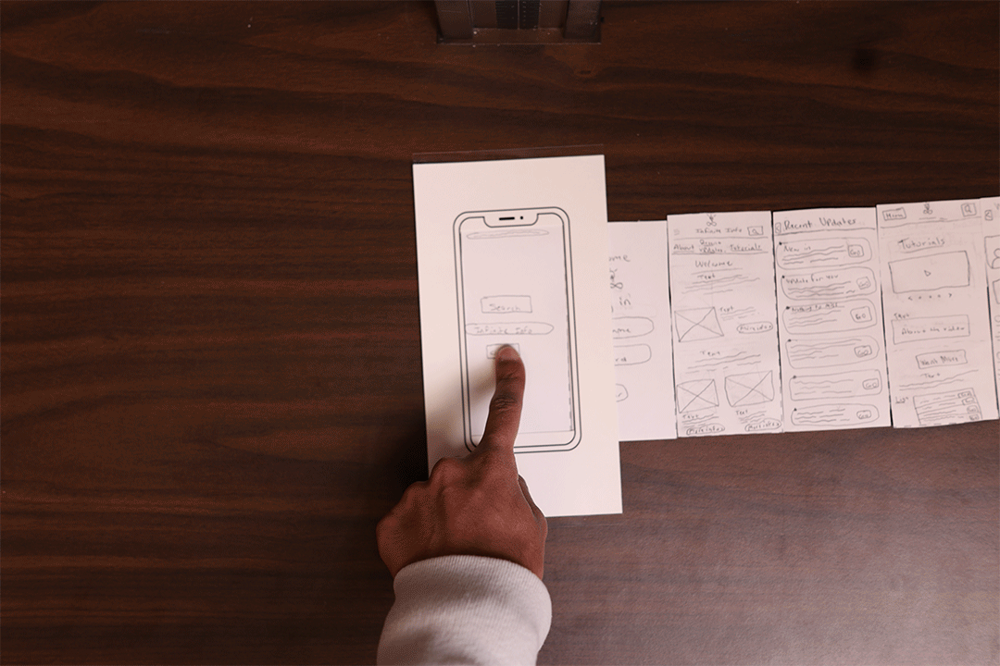
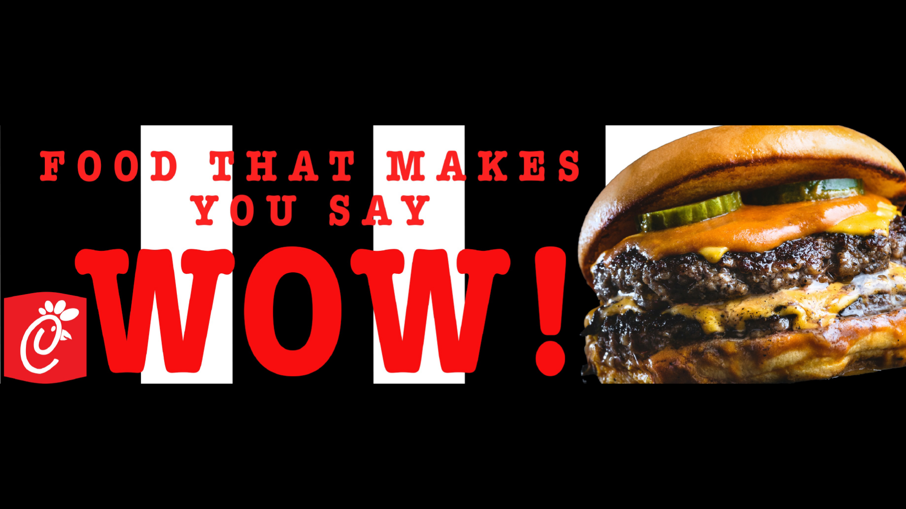
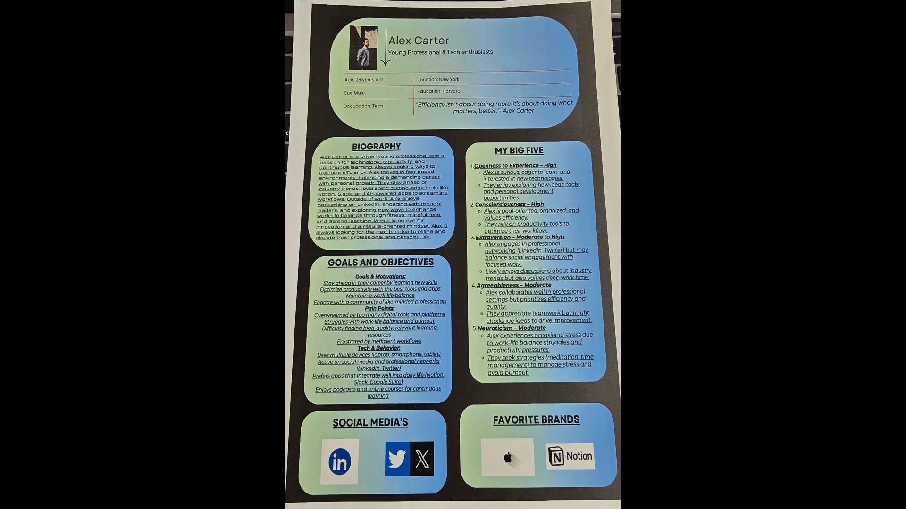
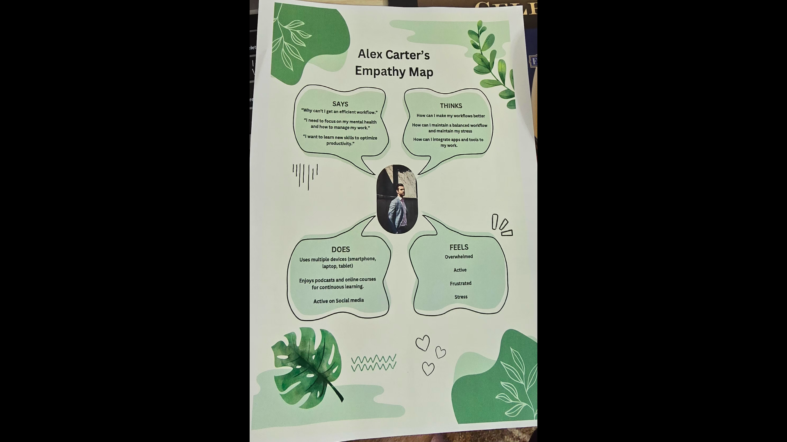

Hi my name is Parthiv I am 23 I am pretty new to the Design world so I dont have as much experience as a lot of others that I've met throughtout my years here but I have slowly learned a lot from everyone I've been around. Besides design
I love cars I'm a BIG carguy and always will be, I also love sports like Football, Cricket,and some Basketball.
I love to watch lots of YouTube, Movies and some shows, I also love to go on bike rides to the park and like to occasionally play video games like CoD or Geoguessr that I have recently gotten into to learn more about the world.
When I came into the design world I had no design interests but slowly as I progressed throught the design years I've caught a certain type of design interest and that is a very minimalistic design interest.
My Education has been a long road I started off in Dental Hygiene for about 2-3 years that was fun for the first 2 years but I lost my interest in it because I didn't see a long-term future in that field.
I ended up dropping out and decided to hop into Web Design where I realized this is where I belong because I've always had a mind where I want to creative things I've also always looked into other websites layouts and that is the main reason I got into this field.
Experience
Web Design
VIS1140 • Present
Know the Basics like how to make a prototype, wireframes and I also got to learn how to use Figma as well. Prototypes and Wireframes were the first 2 things I did in Figma to get a feel of how to use it.
Used Photoshop, Illustrator, InDesign and more Adobe products and got comfortable with those basics so I know how to make basic desgins as a beginner.
I've had volunteer work in India where I had the oppurtunity to help serve the elderly that have no family to take care of them food, This made me view volunteering very differently.
In High School I got the oppurtunity to take a class where I get to deliver mail to teachers that don't have enough time on their hands to pick up their important mail so I was given the task to go around the whole school dropping off mail. This gave me the oppurtunity to get my personality out their and be able to speak to people I've never met and experience new things and new encounters everyday.
Projects
Design Foundations Sketches
Design Foundations



In the Sketches my objective was to use lines and circles to make a design that describes the word that I had picked out to make sketches of. In the process of this project I had to make 20 sketches using circles and lines in as many ways possible to express the word I had picked out, I also had to make around 150 total sketches including all the words. In this project I learned how you can make lots of designs using only lines and circles for just one word and learn how you and others see words through design. I don’t see anything I’d do differently because while I was working on this project it was complicated at first sight but as soon as I understood the process I was working out the sketches with ease.
Clear Is Kind
VIS1140

In Clear is Kind I had to create a 7-8 paper prototype sketches then did an in-person representation in class and from there I went on to making it interactive for the app (Infinite Info), for our users in Figma and make them as realistic and simple as possible for our users to follow through and get to the end goal for our user. In the process I used tools like frame tool, text and the shape tools on Figma to create a unique and easy app for my user and made it interactive by making buttons that lead to different pages. I also in the process had made a task for my users to do and see how accessible my app is and how I can better my app for users to understand, view and manage through properly and with ease. This project helped me explore many ways of how to make wireframes in many different unique ways. Finding the right gradient for each page was challenging for me because I didn’t want it to be random colors from the colors I had chosen. I wanted each page's gradient to feel like it fits in with the context of what the page is going to be about. The only thing I feel like I would've liked to do differently is making my search bar not as existent because too many people saw that more than everything else on the app.
Billboard Mockup
UX/UI

Before I started my mockup I had picked out 4 fast food restaurants and I had drawn over them in Photoshop or Illustrator and after I had done that I had come up on this project where I had to pick one of the fast food restaurants and make a billboard mockup. While in the process of making the mockup I went into Photoshop and took all my content for the restaurant I picked out Chick-Fil-A and put it into Photoshop. From there I started brainstorming a nice and customer attracting billboard design for customers to feel intrigued and to go to Chick-Fil-A and get the item being sold. In this project I learned more about how to use Photoshop and the tools it consists of, I also learned in what ways I can use the colors to attract people to the billboard so they will find it intriguing and will expect more to come.
Persona and Empathy Map
Design Process


For my persona we used ChatGPT to make a person named Alex Carter and our goal was to create a persona for this person using what ChatGPT gave me. Our goal was to find out what sort of person Alex is and what his Goals,Pain Points, and what sort of Tech he likes and how his Behavior is as well. I learned the gist of how a resume can look and how I can make my own when the time comes. For this project I didn’t go through many challenges or anything because mostly everything I did with this project was purely off using ChatGPT to get a feel for how to make a resume or persona. I would’ve liked to use less of ChatGPT and used more of what I would like to say and how I feel about the persona and make the persona based off of what I know from the information ChatGPT gave me about Alex Carter.
I then went on to make an Empathy Map for Alex about what he Says, Does, Thinks, and Feels and I used tools like Canva to know how I want our map to look, and I used ChatGPT to find out what his Says, Thinks, Does, and Feels are as well. And I did all of this on Figma and Canva. Using Canva really helped make the Empathy Map because all I had to do was do all my work on Canva and then save it. Looking back at the Empathy Map it was the easiest thing to do because I didn’t have to go back and forth between two apps and I didn’t have to do extra work saving the map. I don’t think I would want to do anything different. Everything was easy to do and wasn’t difficult at all.
Education
B.S. in Computer Science
Wright State University • Dayton, OH
Focused on software engineering, human–computer interaction, and systems design. Built several projects
exploring the intersection of usability and robust architecture.